library(mosaic)
set.seed(2009)
rflip(1)
Flipping 1 coin [ Prob(Heads) = 0.5 ] ...
T
Number of Heads: 0 [Proportion Heads: 0]R package build
11. Juni 2021
Der fairen Wurf einer fairen Münze, also eine Münze bei der Kopf und Zahl gleich wahrscheinlich geworfen wird, sei der Ausgang des ersten Weges.
Wir können den Münzwurf mit R simulieren:
Flipping 1 coin [ Prob(Heads) = 0.5 ] ...
T
Number of Heads: 0 [Proportion Heads: 0]Genauso wie den Wurf zweier Münzen:
Oder auch von 20 Münzwürfen:
Flipping 20 coins [ Prob(Heads) = 0.5 ] ...
T T T T H H T T T H H H H T H T T H H H
Number of Heads: 10 [Proportion Heads: 0.5]Wir wollen uns dafür interessieren, wie der Zufall auf jeweils \(n\) Münzwürfe einwirkt
Und wieder holen dafür die drei Experiment jeweils \(N=10^{4}\) mal und schauen uns danach anwie die Anzahl der Kopf Würfe variiert:
n <- 1
vrtlg_1 <- do(N) * rflip(n)
gf_bar(~ heads, data = vrtlg_1) %>%
gf_refine(scale_x_continuous(breaks = 0:n, limits = c(-0.5,n + 0.5)))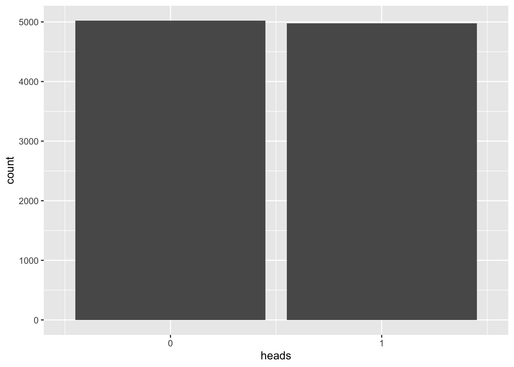
\(n=2\)
n <- 2
vrtlg_2 <- do(N) * rflip(n)
gf_bar(~ heads, data = vrtlg_2) %>%
gf_refine(scale_x_continuous(breaks = 0:n, limits = c(-0.5, n + 0.5)))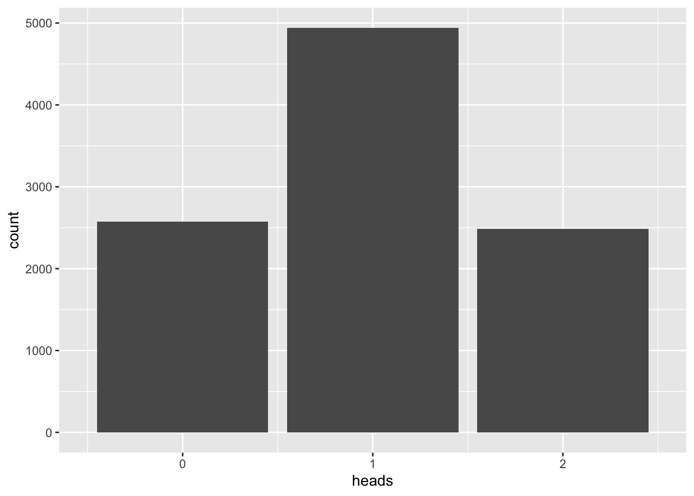
\(n=20\)
n <- 20
vrtlg_20 <- do(N) * rflip(n)
gf_bar(~ heads, data = vrtlg_20) %>%
gf_refine(scale_x_continuous(breaks = 0:n, limits = c(-0.5, n + 0.5)))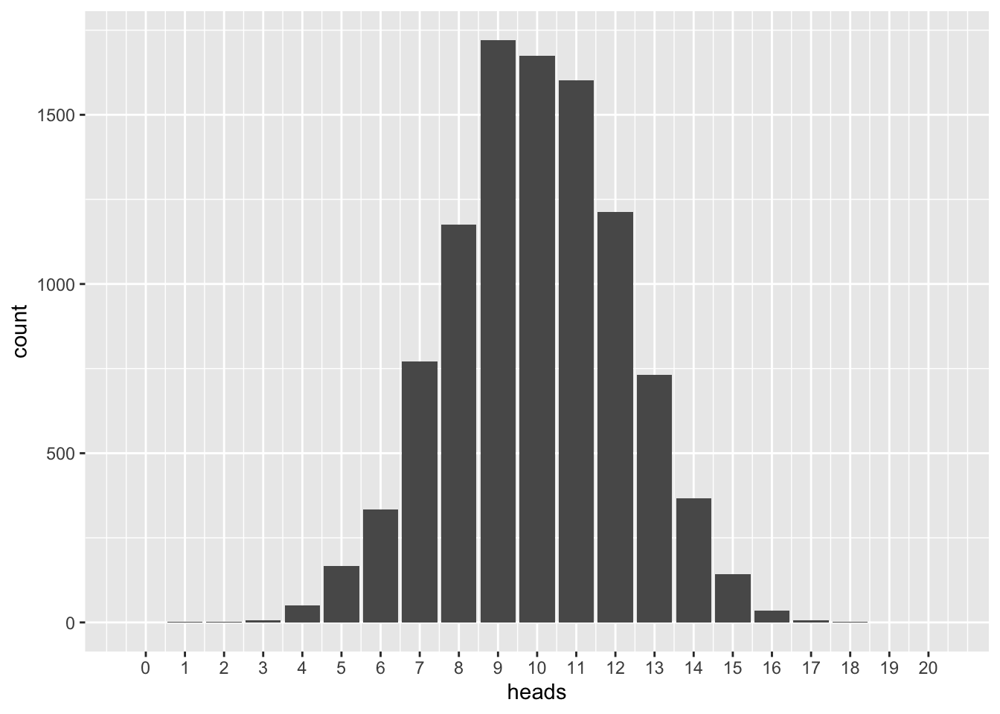
\(n=50\)
n <- 50
vrtlg_50 <- do(N) * rflip(n)
gf_bar(~ heads, data = vrtlg_50) %>%
gf_refine(scale_x_continuous(breaks = 0:n, limits = c(-0.5, n + 0.5)))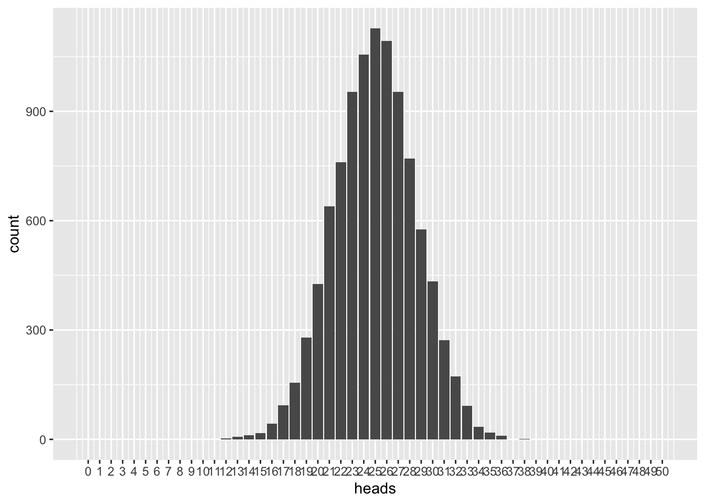
Der faire Wurf eine fairen Münze \(X\) ist aber vorallem ein Gedanken-Expermiment, bei dem wir davon ausgehen, dass die Wahrscheinlichkeit für Kopf gleich der Wahrscheinlichkeit für Zahl ist:
\[ P(X = \text{"Kopf"}) = P(X = \text{"Zahl"}) = 50\,\% = 0{,}5 \]
Wir wollen die beiden Ergebnisse kodieren: \(\text{"Kopf"}\) mit \(1\) und \(\text{"Zahl"}\) mit \(0\). Somit können wir schreiben:
\[ P(X = 0) = 0{,}5 = P(X = 1) \]
Für denn Fall, dass die Münze nicht mehr fair ist wollen wir vereinbaren, dass wir mit \(q = P(X = 0)\) und \(p = P(X = 1)\) die jeweiligen Wahrscheinlichkeiten bezeichnen wollen. Es gilt aber immer, dass \(q+p = 1\) ist!
Eine Variable \(X\) die dem Zufall ein Wert \(x\) zuweist, wollen wir Zufallsvariable nennen.1
Ausgehen von der Annahme können wir uns diese theoretischen Verteilungen auch einmal ansehen:
n <- 2
tab <- tally( ~ heads, format = "proportion", data = vrtlg_2)
dist_2 <- data.frame(
x = as.numeric(names(tab)),
density = as.numeric(tab)
)
gf_dist("binom", size = n, prob = p) %>%
gf_point(density ~ x, data = dist_2, color = "lightgreen", alpha = 0.7)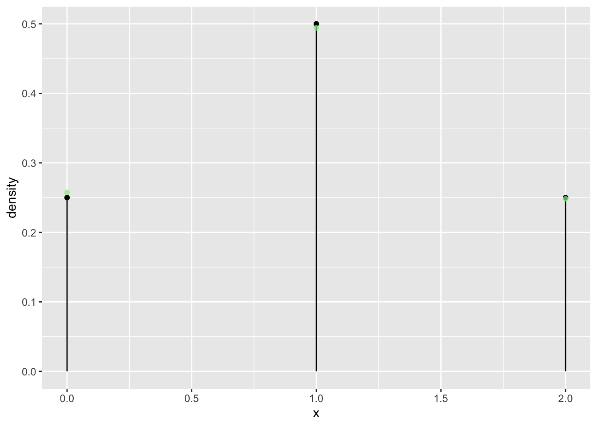
n <- 20
tab <- tally( ~ heads, format = "proportion", data = vrtlg_20)
dist_20 <- data.frame(
x = as.numeric(names(tab)),
density = as.numeric(tab)
)
gf_dist("binom", size = n, prob = p) %>%
gf_point(density ~ x, data = dist_20, color = "lightgreen", alpha = 0.7)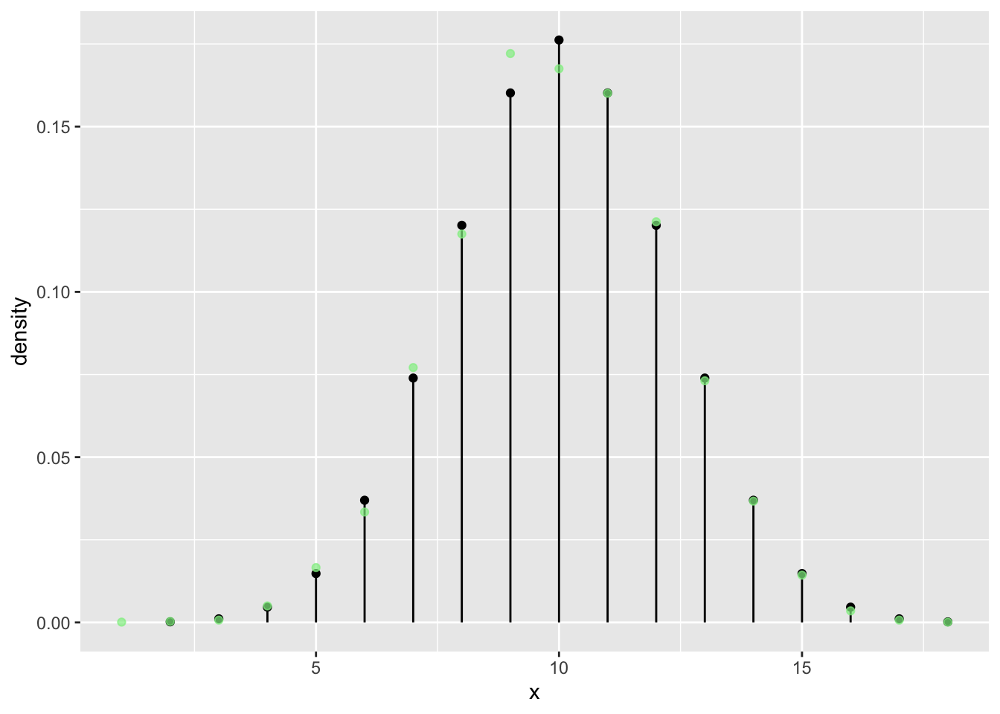
n <- 50
tab <- tally( ~ heads, format = "proportion", data = vrtlg_50)
dist_50 <- data.frame(
x = as.numeric(names(tab)),
density = as.numeric(tab)
)
gf_dist("binom", size = n, prob = 0.5) %>%
gf_point(density ~ x, data = dist_50, color = "lightgreen", alpha = 0.7)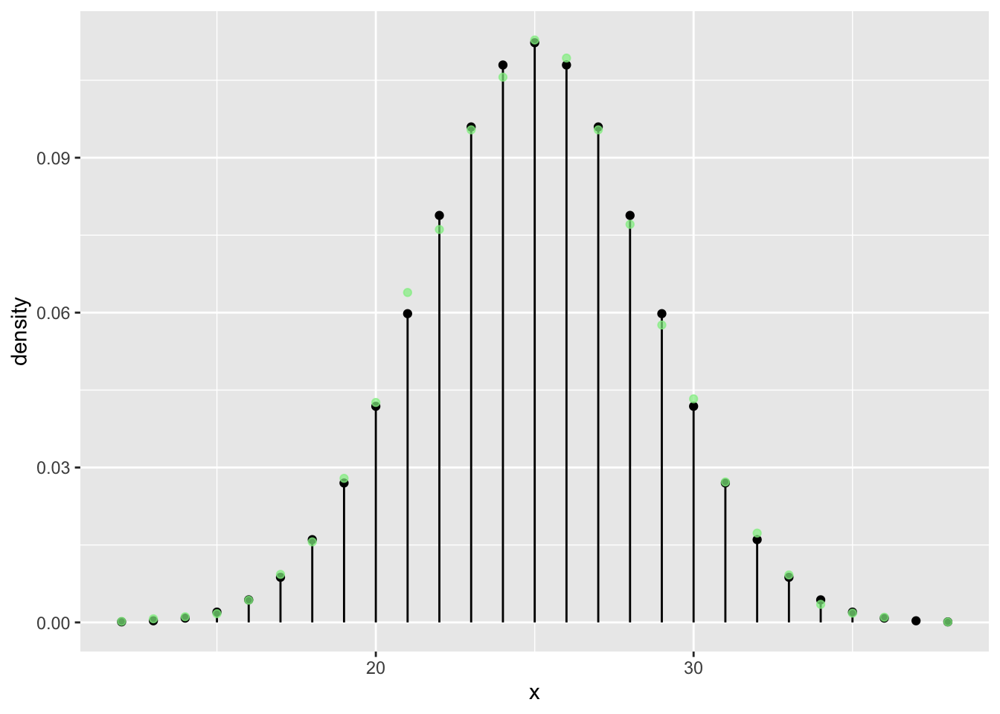
n <- 100
N <- 5 * n**2
vrtlg_100 <- do(N) * rflip(n)
tab <- tally( ~ heads, format = "proportion", data = vrtlg_100)
dist_100 <- data.frame(
x = as.numeric(names(tab)),
density = as.numeric(tab)
)
gf_dist("binom", size = n, prob = p) %>%
gf_point(density ~ x, data = dist_100, color = "lightgreen", alpha = 0.7)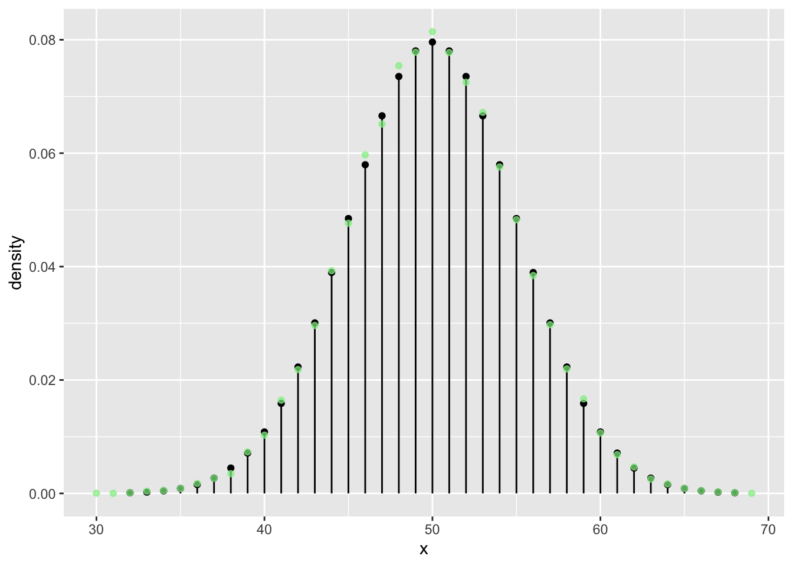
n <- 300
N <- 5 * n**2
vrtlg_300 <- do(N) * rflip(n)
tab <- tally( ~ heads, format = "proportion", data = vrtlg_300)
dist_300 <- data.frame(
x = as.numeric(names(tab)),
density = as.numeric(tab)
)
gf_dist("binom", size = n, prob = p) %>%
gf_point(density ~ x, data = dist_300, color = "lightgreen", alpha = 0.7)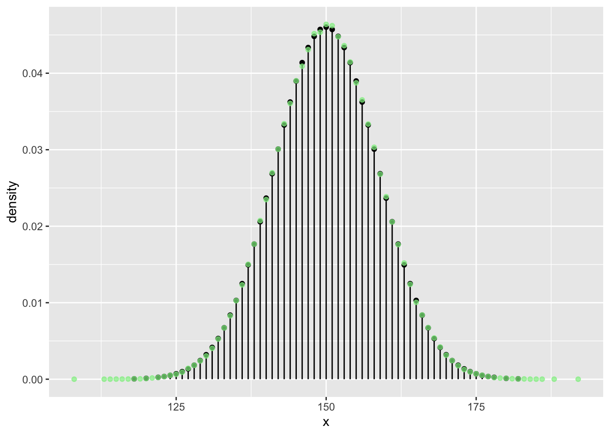
Zeichnen wir nun die Gauß’sche Glockenkurve in rot dazu:
gf_dist("binom", size = n, prob = p) %>%
gf_point(density ~ x, data = dist_300, color = "lightgreen", alpha = 0.7) %>%
gf_dist("norm", mean <- n*p, sd = sqrt(n*p*(1 - p)), color = "red")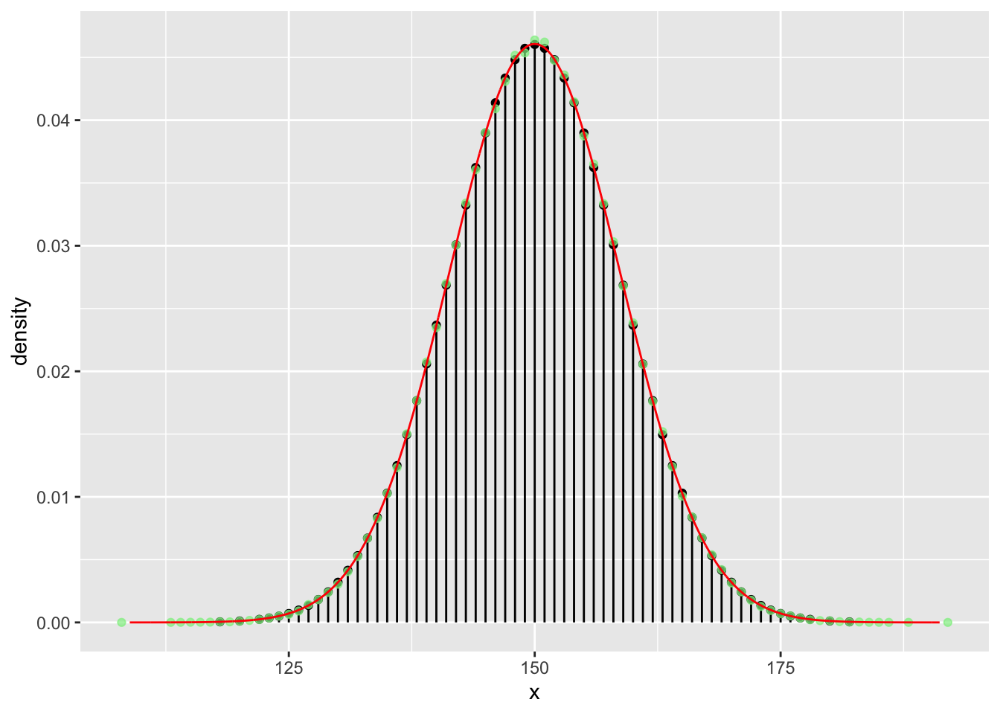
Die Gauß’sche Glockenkurve ist die Dichtefunktion der Normalverteilung und ist definiert durch:
\[ f(x) = \frac{1}{\sqrt{2 \pi \sigma^2}} e^{- \frac{(x-\mu)^2}{2\sigma^2}} \]
Mit den beiden Parameter \(\mu\) und \(\sigma^2\) kann man den Mittelwert der Verteilung (auch Erwartungswert genannt) und die Varianz der Verteilung einstellen.
Wir haben diese Werte oben mit den theoretischen Werten der Binomialverteilung \(\mu = E[X] = p \cdot n\) und \(\sigma = \sqrt{\sigma^2}= \sqrt{Var[X]} = \sqrt{n \cdot p \cdot (1-p)}\) belegt.
Wir sehen, die (simulierten) relativen Häufigkeiten der Münzwürfe streben mit steigendem \(N\) mehr und mehr in Richtung der (theoretischen) Wahrscheinlichkeiten der Binomialverteilung und diese (mit steigendem \(n\)) gegen die Gauß’sche Glockenkurve der Normalverteilung.
Eine Verteilungsfunktion \(F(x)\) gibt an, wie wahrscheinlich es ist, einen Wert \(\leq x\) zu beobachten:
\[ F(x) = P(X \leq x) \]
Natürlich ist damit immer \(0 \leq F(x) \leq 1\).
Eine empirische Verteilungsfunktion \(F_n(x)\)gibt an, wie groß die relative Häufigkeit des eintretens von Werten \(\leq x\) bei einem Stichprobenumfang von \(n\) waren: \[F_n(x) = \frac{\text{Anzahl der Werte} \leq x}{n}\]
Betrachen wir nun empirische Verteilungsfunktion unserer Experimente:
n = 2
n = 20
n = 50
n = 300
Tragen wir zur empirische Verteilungsfunktion auch die Verteilungsfunktion der Normalverteilung von oben ein:
n <- 300
gf_ecdf( ~ heads, data = vrtlg_300) %>%
gf_dist("norm", mean <- n*p, sd = sqrt(n*p*(1 - p)), kind="cdf", color = "red")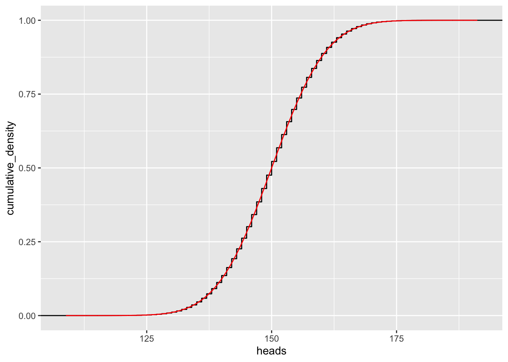
Die empirische Verteilungsfunktion strebt also gegen die (theoretisch) Verteilungsfunktion der Normalverteilung. Sie lautet:
\[ F(x) = \int_{-\infty}^x f(u)\, \text{d} u = \int_{-\infty}^x\frac{1}{\sqrt{2 \pi \sigma^2}} e^{- \frac{(x-\mu)^2}{2\sigma^2}} \]
Eigentlich handelt es sich damit strenggenommen um eine Funktion. Und es müssen noch weitere Eigenschaften erfüllt sein. Aber darauf gehen wir hier nicht weiter ein.↩︎